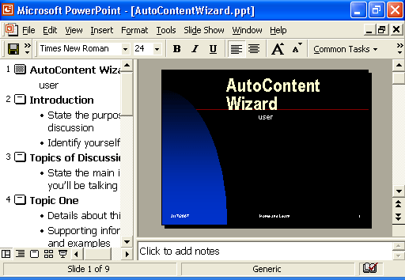
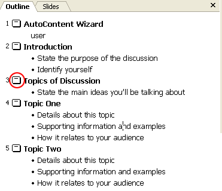
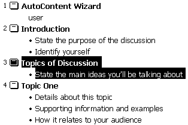
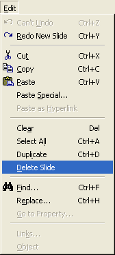
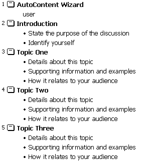
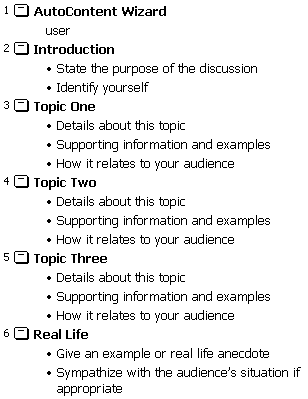

Free
powerpoint
Tutorials
|
Free
powerpoint
Tutorials
|
|
 home home |
Stay at Home and Learn | ||||
Your First PowerPoint Presentation |
|||||
|
Part 1, 2, 3, 4, 5, 6, 7, 8, 9, 10, 11
For this first presentation, we'll just make changes to the default slides that PowerPoint gave us with the AutoContent Wizard. In this section, you will learn the following:
For the subject of the presentation, we'll teach people how to use the AutoContent Wizard! You can view the finished presentation by clicking the link below (Or right click and save it to your hard drive by selecting Save Link As, or Save Target As): PowerPoint Presentation One (400 Kilobytes) By the end of this section, you'll have designed a presentation just like this one.
To start, open up your AutoContent Wizard presentation from the first section, if it's not already open. If not, click File > Open from the menu, and navigate to where you saved your ppt document. But it should look like ours, when it's open (screenshot is from PowerPoint 2000):  We'll come to back to the main slide late, and tidy it up. First, we'll delete a few slides because we don't need all nine that the wizard gave us. For our presentation about the AutoContent Wizard, we'll have the following
slides:
In the Slide Outline on the left, click the slide icon next to number 3 (Topics of Discussion), as in the image below (image from PowerPoint 2003):  When you click on the slide icon in Outline View, it will display that slide on the main stage. The text in Outline will then be highlighted:  With slide number 3 highlighted, click Edit from the menu bar at the top of PowerPoint. From the Edit menu, select Delete Slide:  When you click Delete Slide, PowerPoint will delete the highlighted slide, and then arrange the remaining slide numbers for you:  Number three on the list of slides is now called Topic One. Using the same technique, delete slide numbers 7 and 8 from your presentation.
This will leave only 6 slides, one short of what we need. You'll see
how to add a new slide, but your Outline View on the left should now
look like ours:  In the next part of this tutorial, you'll see how to insert a new slide.
|
||||